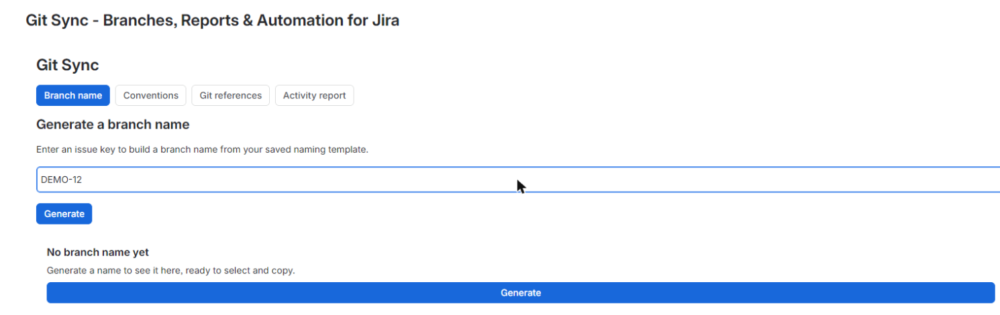
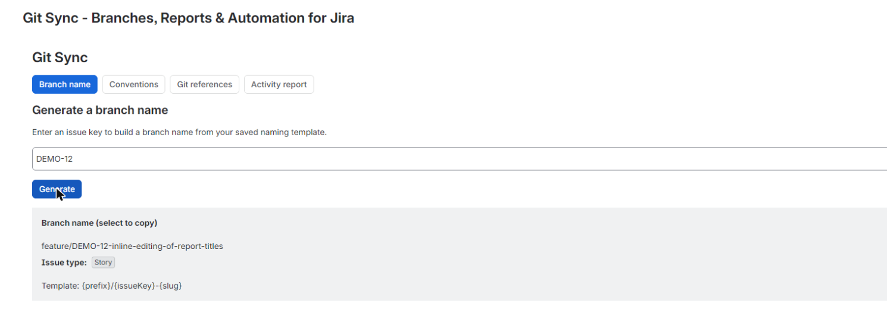
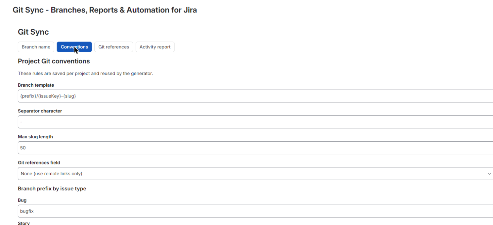
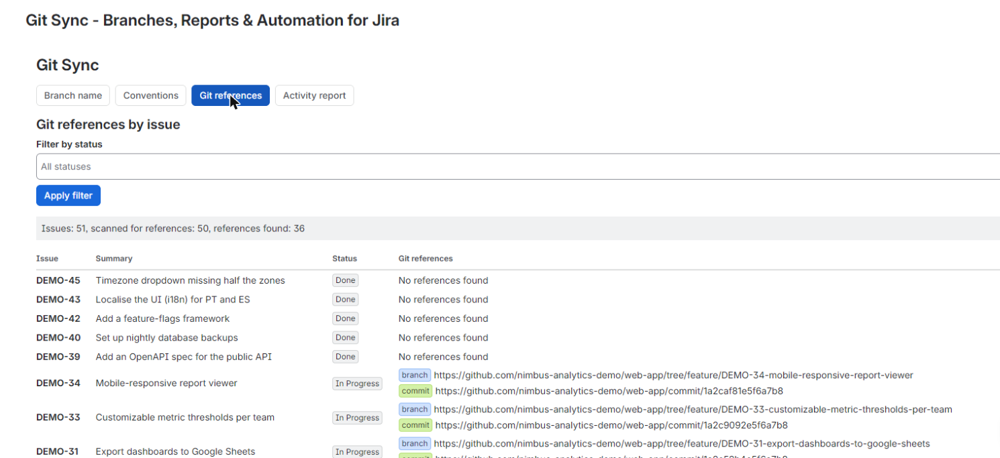
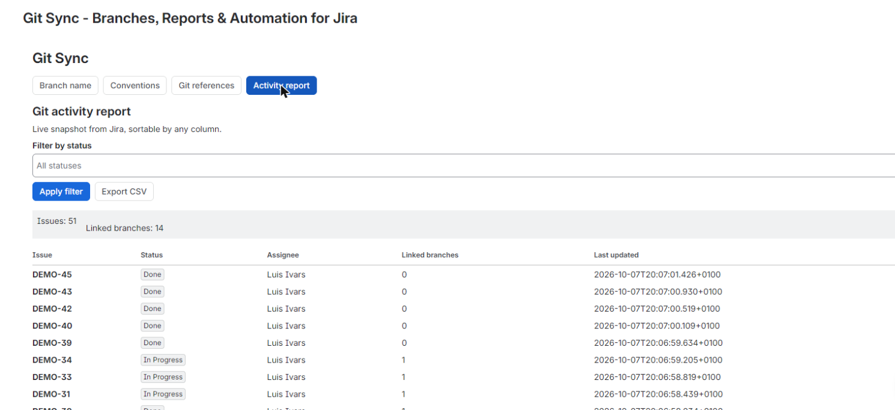
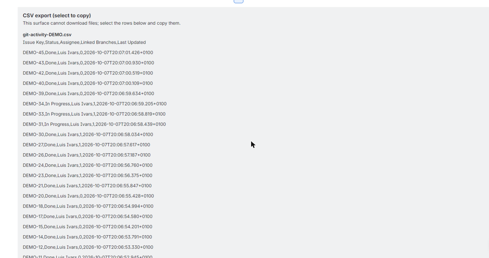

Git Sync for Jira helps your team get more out of Jira.






Naming conventions live in a settings panel: a branch prefix map by issue type, a separator character and a max slug length, all persisted per project in Forge storage. When you generate a branch name for an issue, it is built from that saved template every time, shown ready to select and copy, so the format never drifts between developers or projects. The reporting side lists every issue in the project next to the Git references parsed from a designated Jira field and remote issue links, filterable by status. A per-project activity report (issue key, status, assignee, linked branch count, last updated) is built from live Jira REST v3 reads, sortable by any column, and exportable as CSV. The current release reads from Jira and Forge storage only: no external GitHub connection, no external servers, no external egress. That keeps your settings and issue data inside Atlassian's trust boundary while still giving you reliable, transparent Git visibility on every issue.
Every branch name is generated from the per-project template you saved in settings, prefix, separator and slug length included, so developers never have to manually fix an inconsistent branch name again.
Git references parsed from your Jira field and issue links show up in one sortable table per project, so you can confirm work is actually linked instead of trusting a panel that just says connected.
Filter the issue list by status, sort the activity report by any column, and export it as CSV for standups, audits or sharing outside Jira without rebuilding the data by hand.
Does Git Sync need to connect to GitHub or another Git host?
No, the current release reads only from Jira REST v3 and Forge storage. Branch, commit and PR references are parsed from a designated Jira field and remote issue links, with no external connection required.
Can I customize the branch naming format per project?
Yes, the settings panel lets you set a branch prefix per issue type, a separator character and a max slug length, saved per project. The generator always applies this saved format.
Can I export the Git activity report?
Yes, the per-project activity report (issue key, status, assignee, linked branch count, last updated) can be exported as CSV directly from the table.
Where do the branch, commit and PR links come from?
They are parsed from a designated Jira field on each issue plus the issue's remote links, then shown alongside every issue in the project list, filterable by status.
Is my naming configuration stored outside Jira?
No, per-project naming conventions are stored in Forge KVS, which lives inside Atlassian's infrastructure alongside your Jira data.
The app reads Jira data with the permissions of the person using it, and only:
Everything runs on Atlassian Forge and no data leaves Atlassian. Details in the privacy policy.
For questions, issues, or feature requests: